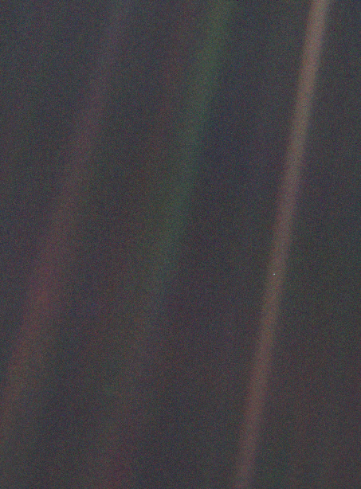

The browser stopped the Planetarium's graphics. If this keeps happening, reload with the graphics settings recommended for this device.

I, Voyager - Planetarium
v0.2.1.dev3
Loading...
You can install the Planetarium as a web app! After download,
look for the install icon in the URL bar of your browser.
A native Windows app can be downloaded
here.
Please consider supporting us at our GitHub Sponsor's Page!